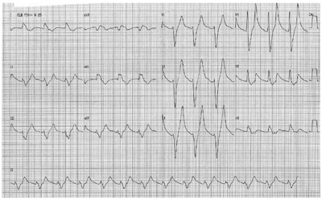
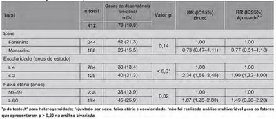
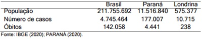

Em relação ao tratamento da COVID-19, assinale a alternativa correta.
Um paciente masculino com 65 anos apresenta quadro de icterícia progressiva, hipocolia fecal e colúria com 30 dias de evolução. Sobre esse caso, considere as afirmativas a seguir. I. A vesícula biliar palpável estará associada à obstrução de via biliar. II. Se houver esplenomegalia, a possibilidade de síndrome de Gilbert deve ser considerada. III. Os níveis de urobilinogênio na urina estarão elevados. IV. Os níveis séricos de bilirrubina serão predominantemente na forma conjugada. Assinale a alternativa correta.
A epicondilite lateral de cotovelo é uma causa comum de dor em indivíduos de ambos os sexos, principalmente entre 40 e 60 anos de idade. O diagnóstico é clínico na maioria dos casos. No exame físico, o paciente deverá referir dor ao realizar a seguinte manobra:
Um paciente de 60 anos foi admitido no pronto-socorro com quadro de fraqueza nas pernas e palpitações há dois dias, apresentando síncope, em casa, há duas horas. De antecedentes pessoais, tem diabetes retinopatia, doença renal crônica estágio 3b, além de miocardiopatia isquêmicacom fração de ejeção levemente reduzida. Faz uso contínuo de insulina NPH, losartan, carvedilol e AAS, com uso esporádico de furosemida. Há 15 dias, seu clínico associou espironolactona pelo antecedente de disfunção contrátil do coração. Paciente encontrava-se com PA 110/70, FC 90 bpm, eupneico e euvolêmico. Na sala de emergência, foi realizado um ECG que mostrou o seguinte padrão. Sobre o caso acima, considere as afirmativas a seguir. I. Hipoaldosteronismo hiporreninêmico pode ter contribuído para o quadro do paciente. II. Principal medida a ser realizada é encaminhar o paciente para trombólise ou angioplastia. III. O uso de diurético de alça é contraindicado pelo risco de agravamento do quadro cardíaco. IV. A infusão de gluconato de cálcio IV terá efeito protetor sobre as células miocárdicas. Assinale a alternativa correta.

Tratamento Geral Em relação aos acidentes vasculares encefálicos, considere as afirmativas a seguir. I. A gravidez é uma contraindicação absoluta para se efetuar trombólise arterial. II. Pacientes portadores de fibrilação atrial devem ser anticoagulados. III. Deve-se prescrever antiagregação dupla aos pacientes com isquemia cerebral transitória decorrente de lesão de grandes artérias. IV. Trombólise arterial pode ser cogitada nos pacientes que se mantêm com a pressão arterial inferior a 180/110 mmHg. Assinale a alternativa correta.
Em relação à afasia de broca, assinale a alternativa correta.
Sobre a hanseníase, considere as afirmativas a seguir. I. É essencialmente uma doença dos nervos periféricos, contituindo-se a causa mais frequente de neu- ropatia periférica tratável. II. Estados reacionais podem ocorrer antes, durante ou após a instituição do tratamento específico. III. Para fins operacionais, os pacientes são classificados em grupos indeterminados, dimorfos e vir- chowianos. IV. A reação hansênica do tipo I tem como principal manifestação o eritema nodoso hansênico. Assinale a alternativa correta
No tratamento da hipertensão intracraniana, a monitorização da pressão de perfusão cerebral (PPC) é fundamental para o tratamento do paciente. Sobre a pressão de perfusão cerebral, assinale a alternativa correta.
Paciente de 72 anos, tabagista há 50 anos, 2 maços/dia, deu entrada no pronto-socorro com queixa de piora da dispneia. Apresentava-se em regular estado geral, confuso e agitado, taquipneico, saturação de O₂ de 86% em ar ambiente, apresentava roncos e sibilos difusos. Foram iniciadas medidas broncodilatadoras. Sobre a oxigenioterapia e as estratégias de ventilação, assinale a alternativa que apresenta, corretamente, a conduta mais adequada para esse caso
Paciente de 65 anos, hipertenso e tabagista, evoluiu com dor torácica retroesternal que irradia para as costas, de início súbito. Paciente chega após 3 horas do início da dor, ainda sintomático. Apresentava-se hipertenso, pressão 190x110 mmHg e dispneico, com sopro diastólico em foco ártico 3+|6. Na investigação etiológica, o médico solicita o dímero D, tendo como resultado o valor elevado. Quanto à conduta nesse caso, considere as afirmativas a seguir. I. A pressão deve ser reduzida com drogas EV. Muitas vezes, um vasodilatador associado a esmolol é a terapia de escolha. II. O dímero D não é específico para TEP, mas pode ser de grande ajuda para diagnósticos com apresentações clínicas atípicas. III. Uma angiotomografia de tórax deverá ser solicitada, independentemente do dímero D. IV. Nesse caso, solicitar um Pro-Bnp e um ecocardiograma transtorácico ajudaria mais que a angio TC. Assinale a alternativa corre
Deu entrada na sala de emergência um paciente em parada cardiorrespiratória. Após verificação do ritmo, foi observado parada cardíaca em atividade elétrica sem pulso. Seguindo as novas diretrizes (atualização) do ACLs publicada em 2020, assinale a alternativa que apresenta, corretamente, a conduta mais adequada para esse caso.
Na presença de um paciente com insu ciência cardíaca aguda e fração de ejeção reduzida que se encontra quente e úmido, assinale a alternativa que apresenta, corretamente, a melhor estratégia terapêutica visando à redução de mortalidade.
Sobre o uso de lítio, suas indicações e aspectos clínico-farmacológicos, assinale a alternativa correta.
Paciente do sexo feminino, 45 anos, com história de perda de peso, aumento de apetite, palpitação, sudorese, tremores de extremidades e protusão ocular há 6 meses. Há 1 semana com febre, tosse produtiva e piora do estado geral. Foi trazida ao pronto-socorro pelos familiares. Na ocasião apresentava-se torporosa, desidratada, febril (38 cardíaca = 130 bpm), sudorética, pressão arterial 90/50 mmHg e com perfusão periférica insatisfatória. Após a reposição volêmica e antibioticoterapia, assinale a alternativa correta.
Paciente masculino, 65 anos, chega para consulta de retorno. Queixa-se de dispneia progressiva nos últimos 5 anos, com piora nos últimos 3 meses, após quadro de pneumonia, foi atendido no pronto-socorro e fez tratamento com antibióticos, mas não se lembra de quais. Refere, ainda, tosse com secreção esbranquiçada, que piora ao longo do dia e di culdade para fazer exercícios, precisando parar várias vezes para respirar quando caminha cerca de 100 metros. Faz uso de medicação para tratamento de hipertensão arterial. Nega alergias. Tabagista desde os 30 anos, cerca de 20 cigarros ao dia. Irmã tinha bronquite na infância. Traz os seguintes exames: Radiogra a de tórax sem alterações. Hemograma Hb 14 ht 48 leucitos 8600 eosinó los < 100cel/mcl. Com base no caso apresentado, assinale a alternativa correta.
Criança de 2 anos de idade é levada ao consultório médico, pois, durante uma reunião, familiares questionaram sobre a palidez cutânea da criança. Mãe refere não ter percebido isso anteriormente. Nega febre, nega perdas de sangue e sem outras queixas. Aceita poucos alimentos sólidos, tomando cerca de 8 mamadeiras de 240 ml de leite integral com café. Exame físico identi ca apenas palidez cutânea, anictérica, sem outras alterações. Quanto ao resultado laboratorial mais provável, assinale a alternativa correta.
Revisar: possível letra faltando em enunciado
Em relação à hérnia inguinal na criança, assinale a alternativa correta.
Lactente de 2 meses é levado à consulta devido a regurgitações frequentes. Segundo a mãe, paciente regurgita aproximadamente 8 vezes ao dia, principalmente após a mamada. Alimentação consiste exclusivamente de fórmula de primeiro semestre (fórmula de partida). Paciente foi recém-nascido termo, peso de nascimento 3050 g. Ao exame físico, bom estado geral, corado, hidratado; peso e estatura próximos ao Z score 0. Em relação às medidas não farmacológicas indicadas no manejo desse quadro, considere as afirmativas a seguir. I. Colocar para dormir em decúbito lateral ou supino. II. Trocar fórmula de partida por fórmula à base de proteína de soja. III. Reduzir o volume das mamadas com manutenção do volume total diário. IV. Manter o lactente em posição vertical por 20 a 30 minutos após a mamada. Assinale a alternativa correta.
Em relação às vacinas, atribua V (verdadeiro) ou F (falso) às afirmativas a seguir. ( ) Adjuvantes são substâncias presentes nas vacinas que potencializam a resposta imune, melhorando sua e cácia ou prolongando a sua proteção. ( ) O timerosal, um conservante que possuiu mercúrio na sua fórmula e é usado em algumas vacinas, está relacionado a alguns casos de autismo. ( ) Síncopes após a aplicação das vacinas acontecem mais em adolescentes e estão relacionadas à ansiedade e ao medo da dor da aplicação da agulha. ( ) Evento adverso pós-administração de vacina que faça com que a criança necessite de hospitalização por pelo menos 24 horas é considerado grave. ( ) Em geral, deve-se evitar a aplicação de mais de uma vacina no mesmo dia para não sobrecarregar o sistema imunológico e diminuir a resposta vacinal. Assinale a alternativa que contém, de cima para baixo, a sequência correta.
Sobre a forma como os agentes infecciosos provocam as doenças exantemáticas na infância, considere as a rmativas a seguir. I. O meningococo desenvolve lesões de pele por lesão vascular. II. O vírus varicela zoster desenvolve lesões de pele por ação de toxinas. III. A escarlatina é provocada pela ação direta da bactéria IV. O exantema do sarampo ocorre por ação imunoalérgica do vírus na pele. Assinale a alternativa correta.
Paciente do sexo masculino, 5 anos, apresenta di culdade de evacuar há 2 meses. Segundo a mãe, nos últimos 14 dias, evacua em dias alternados, fezes de grosso calibre, com dor e esforço para evacuar; refere também 2 episódios de escape fecal em roupa íntima. Nega sangramento nas fezes ou perda de peso. Refere eliminação de mecônio entre 24 e 48 horas de vida. Ao exame físico, peso e altura próximos ao Z score 0, abdômen com leve distensão e presença de fezes palpáveis em fossa ilíaca esquerda, ânuscom hiperemia perianal, sem ssuras. Com referência ao quadro clínico, considere as afirmativas a seguir, que correspondem aos critérios para diagnóstico de constipação funcional segundo o ROMA IV. I. Dor ao evacuar. II. Dois episódios de escape fecal em 14 dias. III. Eliminação de mecônio com menos de 48 horas de vida. IV. Frequência evacuatória em dias alternados. Assinale a alternativa correta.
Menina de 8 anos e 6 meses é trazida ao pediatra com queixa de baixa estatura. Ao exame físico, apresenta estatura abaixo do percentil 3, com alvo genético no percentil 10. Apresenta idade óssea de 7 anos. Exames complementares (hemograma, eletrólitos, proteínas, cálcio, fósforo, magnésio e provas de função renal e hepática) normais. Exame físico sem alterações, M1, P1. Para dar prosseguimento à investigação, assinale a alternativa que apresenta, corretamente, qual(is) exame(s) deve(m) ser solicitado(s) inicialmente.
Em relação à obesidade infantil, assinale a alternativa correta.
Recém-nascido a termo, parto vaginal, pré-natal sem intercorrências, 3.200 g ao nascimento, Apgar 9- 9. Ficou em alojamento conjunto e, com 40 horas de vida, realizou-se o “Teste do Coraçãozinho”, que apresentou o seguinte resultado: membro superior direito: 99% e membro inferior: 95%. Em relação ao referido teste, assinale a alternativa correta.
Gestante de 37 semanas chegou ao pronto-socorro com pré-eclâmpsia grave, havendo necessidade de interrupção da gestação. Recém-nascido masculino, peso 3300 g, Apgar 7/10, foi encaminhado à Unidade Neonatal devido a taquipneia, com frequência respiratória de 80 bpm, mantendo saturação de 95%, sem necessidade de oxigênio suplementar. Os raios X de tórax mostravam congestão peri-hilar simétrica, espessamento de cisuras interlobares, hiperinsu ação pulmonar leve. Glicemia capilar 50mg/dl e temperatura axilar de 36,5 correta.
Em relação às cardiopatias congênitas, atribua V (verdadeiro) ou F (falso) às afirmativas a seguir. ( ) O sopro cardíaco é um sinal no exame físico de baixa especi cidade, porém alta sensibilidade para cardiopatias congênitas. ( ) O teste do coraçãozinho (oximetria de pulso), obrigatório em recém-nascidos, é e caz para descartar o diagnóstico de comunicação interatrial e comunicação interventricular. ( ) O forame oval e o canal arterial pérvio podem ser considerados alterações fisiológicas do recém-nascido. ( ) O defeito do septo atrioventricular, cardiopatia comum em pacientes com síndrome de Down, é uma cardiopatia cianogênica de hipofluxo pulmonar. ( ) A comunicação interventricular é uma cardiopatia acianogênica de hiperfluxo pulmonar. Assinale a alternativa que contém, de cima para baixo, a sequência correta.
O cuidado com a saúde da criança exige dominar e utilizar as definições de aleitamento materno adotadas pela Organização Mundial da Saúde (OMS). Assim, em relação aos conceitos estabelecidos, assinale a alternativa correta.
A vigilância do estado nutricional é um importante cuidado na atenção integral à saúde da criança. Considerando essa importância e seus conceitos, assinale a alternativa correta.
Sobre as características das pneumonias na infância, as etiologias e as faixas etárias em que ocorrem, relacione a coluna de cima com a de baixo. (I) Período neonatal. (II) Importante nas pneumonias intra- hospitalares. (III) Importante em crianças com mais de 4 a 5 anos de idade. (IV) Pneumonia bacteriana associada à corioamnionite. (V) A vacinação causou queda importante na sua frequência. (A) Haemophilus influenzae tipo b. (B) Enterobactérias gram-negativas ou Streptococcus agalactiae. (C) Diferentemente de todas as outras faixas etárias, as bactérias representam a principal causa de pneumonia nesse grupo. (D) Staphylococcus aureus. (E) Mycoplasma pneumoniae. Assinale a alternativa que contém a associação correta.
Lactente de 7 meses de idade é transferido ao pronto atendimento de hospital de alta complexidade com queixa de febre há dois dias e exantema caracterizado por petéquias e púrpuras nas 12 horas mais recentes. A criança apresenta-se obnubilada, pálida, taquicárdica e com extremidades frias. Tempo de enchimento capilar maior que seis segundos. Mãe refere que a criança está há mais de 24 horas sem apresentar diurese. No serviço de origem, recebeu 60 mL/Kg de soro siológico, como expansão intravascular. Está edemaciado, fígado palpável a 8 cm do RCD e com estertores crepitantes em bases pulmonares bilateralmente. Sinais vitais: frequência cardíaca de 202 bpm, frequência respiratória de 12 movimentos por minuto, pressão arterial (PA) de 50 / 11 mmHg. Além da intubação orotraqueal, considere as medidas terapêuticas a seguir. I. Prescrever noradrenalina ou adrenalina, para reestabelecimento da pressão arterial. A seguir, considerar inotrópicos, sobretudo em casos de baixa saturação venosa central. II. Prescrever soro siológico em alíquotas de 20 mL/Kg, a cada 20 minutos, até 60 ml/Kg. Após início de diurese e melhora da perfusão periférica, considerar noradrenalina. III. Considerando má perfusão periférica e sinais de baixo débito, prescrever inicialmente dobutamina associada à dopamina em doses baixas para melhora da perfusão renal. IV. Considerar prescrição de vasopressina, associada ou não a corticosteroide sistêmico, se a criança não apresentar melhora da pressão arterial após titulação das catecolaminas. Assinale a alternativa correta.
Em relação à propedêutica do casal infértil, atribua V (verdadeiro) ou F (falso) às afirmativas a seguir. ( ) A avaliação de infertilidade geralmente é iniciada após um ano de relações sexuais regulares desprotegidas, em mulheres com mais de 35 anos. ( ) Mulheres jovens que se submeteram à ooforectomia unilateral, geralmente, não apresentam redução da fertilidade. ( ) A reserva ovariana diminuída pode se referir à diminuição da qualidade do oócito, quantidade de oócitos ou potencial reprodutivo. ( ) Em mulheres adultas, os níveis de hormônio anti-mulleriano (HAM) aumentam gradualmente à medida que o pool de folículos primordiais diminui com a idade. ( ) A histerossalpingografia não é útil para detectar aderências peritubárias ou endometriose. Assinale a alternativa que contém, de cima para baixo, a sequência correta.
Quanto aos fatores de alto risco para endometriose, considere os itens a seguir. I. Menarca tardia. II. Multiparidade. III. Alto consumo de gorduras trans insaturadas. IV. Menopausa tardia. Assinale a alternativa correta.
Quanto às complicações das anomalias uterinas congênitas na gestação, considere os itens a seguir. I. Gestação prolongada. II. Abortamento espontâneo. III. Restrição de crescimento fetal. IV. Insuficiência istmocervical. Assinale a alternativa correta.
Em relação aos contraceptivos orais combinados (COC), atribua V (verdadeiro) ou F (falso) às afirmativas a seguir. ( ) Reduzem o risco de câncer de endométrio e de ovário se utilizados por mais de um ano. ( ) Melhoram a densidade óssea em mulheres na perimenopausa. ( ) Auxiliam na regressão de cistos ovarianos funcionais. ( ) COC contendo drospirenona não têm vantagem sobre outros COC para o tratamento de hirsutismo ou acne. ( ) O regime de COC de ciclo estendido não permite que a usuária escolha quando terá sangramento de privação. Assinale a alternativa que contém, de cima para baixo, a sequência correta.
Uma paciente de 15 anos apresenta um achado incidental de uma massa cística complexa de 7 cm em ovário esquerdo. Assinale a alternativa que apresenta, corretamente, qual das seguintes combinações de marcadores tumorais no sangue é a mais apropriada para investigação.
Assinale a alternativa que apresenta, corretamente, o local mais comum para metástases hematogênicas à distância do câncer do endométrio.
Uma paciente de 16 anos se apresenta à consulta com queixa de amenorreia primária. Ela é ginasta olímpica e faz exercícios intensos regularmente. Ao exame físico, seu índice de massa corpórea (IMC) é de 17, não tem características dismór cas e a genitália externa é feminina. Apresenta desenvolvimento mamário em estágio II de Tanner e pêlos pubianos e axilares em estágio IV. Em relação ao perfil hormonal dessa paciente, assinale a alternativa correta.
Revisar: possível letra faltando em enunciado
Assinale a alternativa que apresenta, corretamente, uma contraindicação para a indução do parto.
Quanto aos fatores de risco para gravidez ectópica, considere os itens a seguir. I. Coito interrompido. II. Doença inflamatória pélvica. III. Idade materna avançada. IV. Tabagismo. Assinale a alternativa correta.
Em relação à gestação múltipla, atribua V (verdadeiro) ou F (falso) às afirmativas a seguir. ( ) A restrição de crescimento fetal é mais comum em gestações gemelares do que na de feto único. ( ) O exame ecográ co no primeiro ou no início do segundo trimestre é o melhor método para garantir o diagnóstico precoce de uma gravidez gemelar, estabelecer uma idade gestacional precisa e determinar a corionicidade. ( ) Gêmeos dicoriônicos correm o risco de complicações específicas dessa corionicidade, como a síndrome de transfusão feto-fetal. ( ) Se houver uma discrepância entre os gêmeos nas medidas biométricas usadas para estimar a idade gestacional, o consenso geral é que a data estimada do parto deva ser baseada nas medidas do gêmeo menor. ( ) O sulfato de magnésio (neuropro laxia) não reduz a gravidade e o risco de paralisia cerebral em gemelares. Assinale a alternativa que contém, de cima para baixo, a sequência correta.
Revisar: possível letra faltando em enunciado
Quanto às contraindicações ao uso do sulfato de magnésio para neuropro laxia em gestações entre 24 a 31 semanas e 6 dias, considere os itens a seguir. I. Miastenia grave. II. Distúrbios de condução cardíaca materna. III. Miocardiopatia materna. IV. Restrição de crescimento fetal. Assinale a alternativa correta.
Quanto às complicações da gestante com hipotireoidismo, considere os itens a seguir. I. Pré-eclâmpsia. II. Descolamento prematuro de placenta. III. Hemorragia pós-parto. IV. Diabetes gestacional. Assinale a alternativa correta.
Em relação à prevenção da pré-eclâmpsia, atribua V (verdadeiro) ou F (falso) às afirmativas a seguir. ( ) A aspirina em baixa dosagem (100-150 mg/dia) deve ser considerada como pro laxia em mulheres com risco aumentado para pré-eclâmpsia. ( ) A aspirina em baixa dosagem deve ser prescrita, preferencialmente, após a 16ª semana de gestação. ( ) A suplementação de cálcio deve ser considerada para mulheres com alto risco e com baixa ingesta de cálcio na dieta. ( ) A heparina de baixo peso molecular deve ser prescrita rotineiramente naqueles casos com histórico de pré-eclâmpsia precoce com restrição de crescimento fetal. ( ) Vitaminas C e E em altas doses são opções eficientes na prevenção de pré-eclâmpsia. Assinale a alternativa que contém, de cima para baixo, a sequência corre
Quanto às vantagens do fórceps em relação ao vácuo-extrator na abreviação do segundo período do trabalho de parto, considere as afirmativas a seguir. I. É menos traumático para a mãe. II. Está associado a maior taxa de sucesso. III. Pode ser utilizado nos fetos prematuros. IV. Mais improvável de se desprender no momento da tração do polo cefálico. Assinale a alternativa correta.
Secundigesta de 35 anos está com 31 semanas e 5 dias de uma gestação gemelar dicoriônica diamniótica. O gemelar 1 está com um crescimento fetal no percentil 20, mas o gemelar 2 está com o percentil abaixo de 5, volumes de líquidos amnióticos normais. Foi realizado um ciclo de corticoterapia antenatal com betametasona e neuropro laxia com sulfato de magnésio. Na avaliação de hoje, o Doppler da artéria umbilical está normal no gemelar 1, mas o gemelar 2 apresenta uxo diastólico nal ausente (diástole zero) com Doppler do ducto venoso demonstrando onda A reversa. Assinale a alternativa que apresenta, corretamente, a conduta para esse caso.
A epidemiologia pode ser conceituada como a ciência que estuda o processo saúde/doença em coletividades, analisando a distribuição e os fatores contribuintes para os agravos em saúde, subsidiando a elaboração de medidas de prevenção, controle e erradicação de doenças, além do suporte para o planeja- mento, gestão e avaliação das ações e dos serviços de saúde (ALMEIDA FILHO; ROUQUAYROL, 2006). Com base na conceituação de epidemiologia e sua perspectiva em descrever a ocorrência de agravos em saúde, pode-se a rmar que a epidemiologia descritiva consiste na avaliação de três características primordiais. Sobre essas características, assinale a alternativa correta.
Sobre os diversos estudos epidemiológicos, considere as afirmativas a seguir. I. Nos ensaios clínicos, os grupos experimental e controle são facilmente comparáveis devido ao controle das variáveis de confundimento. II. A possibilidade de falácia ecológica (atribuir a indivíduos o que se observou nas análises estatísticas) é uma limitação importante dos estudos caso-controle. III. Os estudos de coorte apresentam um delineamento favorável para a investigação da etiologia de doenças raras. IV. Nos estudos transversais, a relação cronológica entre os eventos (exposição e desfecho) pode não ser facilmente detectável. Assinale a alternativa correta
Indicadores de saúde são medidas em saúde que re etem situações particulares de uma população, as quais normalmente não são detectáveis pela observação direta. Assim, um indicador de saúde tem como principal objetivo fornecer informações sobre a situação de saúde de um indivíduo ou de uma população (PEREIRA, 1995). Sobre os indicadores de saúde, relacione o indicador, na coluna de cima, com a descrição correspondente, na coluna de baixo. (I) Coeficiente de mortalidade geral (CMG) (II) Coeficiente de mortalidade infantil (CMI) (III) Razão de mortalidade propor- cional (RMP) (IV) Anos potenciais de vida per- didos (APVP) (V) Taxa de mortalidade infantil neonatal (TMIN) (A) Medida de mortalidade baseada não apenas na dimensão da frequência com que os óbitos ocorrem, mas também na dimen- são do tempo que se deixou de viver em decorrência de uma morte. (B) Estimativa de risco de mortes antes de completar 28 dias de vida a que está exposta a população de nascidos vivos em uma determinada área e período. (C) Proporção de óbitos de indivíduos com idade igual ou superior a 50 anos, em relação ao total de óbitos. (D) Quociente entre o total de óbitos e a população de uma área, em determinado período de tempo. (E) Estimativa do risco de morte a que está exposta uma população de nascidos vivos em uma determinada área e período, antes de completar o primeiro ano de vida. Assinale a alternativa que contém a associação correta.
O resumo a seguir é referente ao artigo intitulado “Ganho de peso por década entre trabalhadores de um hospital público: estudo de coorte histórica”. RESUMO O objetivo do estudo foi avaliar as modi cações no per l nutricional dos trabalhadores de um hospital público por três décadas e sua associação com fatores ocupacionais. Estudo de coorte histórica com trabalhadores ativos em 2013 admitidos em três períodos. Foram coletados dados sociodemográ cos, de peso e de estatura, e calculado o índice de massa corporal (IMC) do exame admissional e de dois exames periódicos/década. Avaliados 386 trabalhadores (76,4% mulheres, 88,1% de cor de pele branca e 29,3 7,3 anos). A média do peso corporal e do IMC da admissão foram maiores naqueles admitidos em 2000 (P = 66,3 12,5 kg; IMC = 21,3 2,5 kg/m²), em comparação àqueles admitidos em 1980 (P = 56,7 10,2 kg; IMC=21,3 2,5 kg/m² ) e 1990 (P = 62,2 11,5 kg; IMC = 22,9 3,3 kg/m²). A variação do peso e do IMC/década foi maior nos trabalhadores admitidos em 2000, em comparação com aqueles admitidos em 1990 e 1980. Quando essa comparação foi estrati cada por sexo, a diferença na variação do peso e do IMC/década foi observada apenas nos homens. Turno de trabalho e categoria pro ssional não foram associados com a variação do peso corporal e IMC. O aumento ponderal e do IMC re etem a transição nutricional observada no País, o que reforça a necessidade de vigilância nutricional e educação continuada desses trabalhadores. (MONTZEL; COSTA; SILVA, 2019), publicado na revista Ciência & Saúde Coletiva. A partir das informações contidas no resumo, considerando as tipologias de estudos epidemiológicos, pode-se a rmar que o estudo em questão apresenta
Revisar: possível letra faltando em enunciado
O envelhecimento populacional e as alterações no per l de morbimortalidade da população estão relacionados às mudanças decorrentes da transição demográ ca e epidemiológica. Em relação à transição demográ ca e epidemiológica, atribua V (verdadeiro) ou F (falso) às afirmativas a seguir. ( ) A transição epidemiológica conceitua-se como a passagem de um contexto populacional em que prevalecem altos coeficientes de mortalidade e de natalidade, para outro, em que esses coeficientes alcançam valores muito reduzidos. ( ) O per l epidemiológico atual caracteriza-se pela queda relativa da importância das doenças infecciosas e parasitárias e pelo fato de as doenças crônico-degenerativas e as causas externas se tornarem cada vez mais frequentes. ( ) O envelhecimento populacional brasileiro tem como um dos fatores mais importantes a queda da fecundidade, que levou a uma diminuição gradativa das faixas etárias mais jovens, especialmente quando associada a baixos níveis de mortalidade. ( ) A polarização epidemiológica ou transição polarizada refere-se a situações em que o per l de morbimortalidade se mantém característico de distintos padrões (tanto doenças infecciosas e parasitárias quanto crônico-degenerativas e outros agravos não infecciosos). ( ) O Brasil apresenta uma transição desigual, assim, apesar das reduções dos coe cientes de mortali- dade infantil e mortalidade por doenças infecciosas e parasitárias em todo o país, nas regiões norte e nordeste esses agravos ainda são as principais causas de mortalidade. Assinale a alternativa que contém, de cima para baixo, a sequência correta.
Revisar: possível letra faltando em enunciado
Um estudo foi realizado em município do norte do Paraná com o objetivo de verificar o efeito da mudança e/ou manutenção de pior situação socioeconômica, de estilo de vida e de condições de saúde sobre a incidência de dependência funcional para atividades instrumentais da vida diária (AIVD) em pessoas de 50 anos ou mais (VIEIRA et al., 2019). Parte de seus resultados podem ser observados na tabela a seguir. Incidência e risco relativo de dependência para atividades instrumentais da vida diária, segundo fatores sociodemográ cos, em pessoas com 50 anos ou mais. Cambé, Paraná, 2011-2015. Com base nos resultados apresentados, em que RR é risco relativo e IC é intervalo de con ança, assinale a alternativa correta.

Revisar: possível letra faltando em enunciado
A tabela a seguir apresenta dados dos casos confirmados e óbitos por COVID-19 no Brasil, Paraná e Londrina até setembro/2020, segundo Informe Epidemiológico do Governo do Estado do Paraná. Ainda, é apresentada a estimativa populacional do Brasil, Paraná e Londrina, para 2020, conforme dados do Instituto Brasileiro de Geogra a e Estatística (IBGE). Estimativa populacional (2020) e número de casos e óbitos por COVID-19 até setembro/2020, Londrina, Paraná, Brasil. Os dados apresentados na tabela acima permitem afirmar que, no ano de 2020, até o mês de setembro,

Considerando que o H1N1 já tinha um medicamento pronto para tratar a doença (Tami u) e que as vacinas da gripe já existiam, foi relativamente rápida a adaptação pelos cientistas para a produção de uma nova vacina. No caso específico do Sars-CoV-2, não existe uma droga pronta para o seu tratamento e não há nenhum integrante da família coronavírus, nem Sars, nem Mers, para os quais exista uma vacina base para fazer mudanças e usar contra o novo coronavírus. Em relação às ações que podem ser mais e cazes e viáveis para evitarmos um aumento da pandemia de Covid-19, assinale a alternativa correta.
Quanto aos princípios dos Cuidados Paliativos, nos últimos dias de vida de um paciente, assinale a alternativa correta.
No ano de 1997, foi implantado, pioneiramente, em Londrina, o Serviço de Internação Domiciliar (SID), com capacidade para atender o equivalente a 120 leitos por dia. Em 2012, o SID foi ampliado para o Paraná e todo o país, com o nome de Melhor em Casa. Com base nos conhecimentos sobre o SID, assinale a alternativa que traduz, corretamente, seu objetivo.
Um trabalhador de 50 anos de idade caiu acidentalmente da escada no seu local de trabalho fraturando o fêmur direito. Após permanecer internado por um mês em tratamento ortopédico no Hospital Universitário, veio a falecer em decorrência de broncopneumonia de decúbito durante um plantão noturno de nal de semana. Nesse caso, assinale a alternativa que apresenta, corretamente, por quem deve ser fornecida a declaração de óbito.
Em relação às competências do Sistema Único de Saúde (SUS) no Brasil, atribua V (verdadeiro) ou F (falso) às a rmativas a seguir. ( ) Executar ações de assistência terapêutica parcial. ( ) Executar ações de vigilância sanitária. ( ) Executar ações de vigilância epidemiológica. ( ) Executar ações de saúde do trabalhador. ( ) Executar o financiamento total da saúde com recursos públicos. Assinale a alternativa que contém, de cima para baixo, a sequência correta.
Com relação à comunicação dos acidentes de trabalho (CAT), assinale a alternativa correta.
Para a Atenção Integral à Saúde dos Trabalhadores, recomenda-se que sejam desenvolvidas algumas iniciativas. Sobre tais iniciativas, considere as afirmativas a seguir. I. Apoio ao desenvolvimento de estudos e pesquisas relacionados com a Saúde dos Trabalhadores. II. Fortalecimento da vigilância de ambientes, processos e agravos relacionados ao trabalho. III. Promoção de ambientes e processos de trabalho saudáveis. IV. Participação da comunidade na assistência à saúde dos trabalhadores. Assinale a alternativa correta
A medicina baseada em evidências propõe a integração das melhores evidências com a experiência clínica e as circunstâncias dos pacientes na tomada de decisões clínicas pelos médicos nos Serviços de Saúde. Em relação à qualidade dessas evidências, assinale a alternativa que apresenta, corretamente, o tipo de estudo que nos fornece evidências de maior qualidade.
O exame físico para a identi cação de derrame pleural, sempre teve características facilmente identi cáveis, apesar de ser cada vez menos apreciado e utilizado pelos médicos em tempos atuais, principalmente pelo surgimento e disseminação dos exames radiológicos como radiogra a de tórax ou mais recentemente a tomogra a computadorizada de tórax. A boa prática da medicina deve primar por um bom exame físico em qualquer patologia, pois, além de ser de baixo custo, estreita a relação médico-paciente, promovendo aproximação e contato humano. Em relação aos achados esperados no exame físico de um paciente com derrame pleural volumoso, assinale a alternativa correta.
A doença coronavírus de 2019 (COVID-19) é caracterizada por síndrome respiratória aguda grave causada pelo coronavírus 2 (SARS-CoV2), considerada uma pandemia pelo mundo pela Organização Mundial da Saúde. A COVID-19 tem uma série de implicações cardiovasculares importantes, uma delas é a associação com eventos trombóticos arteriais e venosos. Com base nessas informações, considere as afirmativas a seguir. I. Em relação ao uso de anticoagulantes na infecção pelo SARS-CoV-2, é necessário avaliar o risco/benefício, pesando a sua potencial e cácia: prevenção de trombose em microcirculação pulmonar, tromboembolismo venoso e trombose arterial, contra o risco de complicações, como o sangramento. II. As anormalidades hemostáticas mais frequentes com COVID-19 incluem trombocitopenia e níveis aumentados de dímero-D, que estão associados a um maior risco de eventos tromboembólicos, de exigir ventilação mecânica e admissão na unidade de terapia intensiva. III. Pacientes internados com COVID-19 devem ser extrati cados de acordo com os escores de Pádua ou Caprini e receberem pro laxia com heparina não fracionada ou de baixo peso molecular em doses pro láticas de acordo com o seu risco de desenvolver fenômenos tromboembólicos. IV. A infecção pelo SARS-CoV-2 parece carregar potencial trombogênico aumentado, com repercussões na microcirculação pulmonar, podendo haver benefício de anticoagulação sistêmica com doses terapêuticas de heparina em todos os pacientes sintomáticos. Assinale a alternativa correta.
A oclusão de uma veia renal segmentar resulta em
O músculo cremaster é inervado pelo
Quanto às causas de hipotensão no choque neurogênico, considere as afirmativas a seguir. I. Aumento da resistência vascular periférica. II. Dilatação arteriolar sistêmica. III. Dilatação venosa sistêmica. IV. Diminuição do débito cardíaco. Assinale a alternativa correta.
Quanto ao sintoma ou sinal mais precope e con ável para o diagnóstico de choque hipovolêmico, assinale a alternativa correta.
Quanto às alterações que, muitas vezes, ocorrem logo após um politrauma grave, considere os itens a seguir. I. Hiperfagia. II. Hipermetabolismo. III. Febre. IV. Taquipneia. Assinale a alternativa correta.
As alterações hormonais que ocorrem no pós-trauma ou no pós-operatório favorecem a aceleração da gluconeogênesis. Assinale a alternativa que apresenta, corretamente, onde essa glucose é consumida.
O sinal de Gersuny pode ser encontrado no exame físico de pacientes com complicação de determinada patologia. Assinale a alternativa que apresenta, corretamente, a qual patologia o sinal de Gersuny se refere.
Sobre doença diverticular e suas complicações, atribua V (verdadeiro) ou F (falso) às afirmativas a seguir. ( ) Os divertículos podem acometer todo o cólon. ( ) A forma hipertônica da doença é mais comum no cólon direito. ( ) Os divertículos localizados no cólon direito são de colo largo e curto e estão mais propensos a san- gramentos. ( ) Cirurgia eletiva para tratamento da doença diverticular está indicada nos casos de repetição de diverticulite aguda e sangramentos. ( ) A arteriogra a pode ser utilizada nos casos de sangramento, podendo ser terapêutica, porém necessita de débito hemorrágico da ordem de 0,5 ml por minuto. Assinale a alternativa que contém, de cima para baixo, a sequência correta.
Sobre doença hemorroidária, atribua V (verdadeiro) ou F (falso) às afirmativas a seguir. ( ) A drenagem venosa das hemorroidas internas se dá pelo sistema porta através da veia mesentéricainferior. ( ) Existem três coxins vasculares na região anorretal que formam as hemorroidas, sendo dois à es- querda e um à direita. ( ) A classificação de Dennison para a doença hemorroidária leva em consideração a exteriorização (pro-lapso) dos coxins hemorroidários. ( ) As hemorroidas internas são formadas pela artéria retal inferior. ( ) As hemorroidas externas apresentam dor importante, quase exclusivamente quando trombosadas. Assinale a alternativa que contém, de cima para baixo, a sequência correta
Sobre pseudocistos de pâncreas, assinale a alternativa correta.
Paciento de 45 anos, masculino, internado, no 5°pós-operatório de colecistectomia com coledocotomia para retirada de cálculos do colédoco, apresenta drenagem biliar de 700 ml pelo dreno de Kehr. Está com boa evolução, afebril, boa diurese, aceitando alimentação oferecida, ferida operatória em bom aspecto. Quanto à melhor conduta para esse paciente, assinale a alternativa correta.
Paciente de 10 anos refere dor na região escrotal direita há cerca de 3 horas, irradiada para a região inguinal direita, de início súbito, acompanhada de vômitos. Ao exame físico: BEG, corado, hidratado. TGU: testículo direito aumentado de volume, endurecido, extremamente doloroso e elevado, com perda do reflexo cremastérico ipsilateral. Não houve alívio da dor com a elevação mecânica do órgão. Quanto à(s) conduta(s) nesse caso, assinale a alternativa correta.
Assinale a alternativa que apresenta, corretamente, o tratamento de eleição para o teratoma sacrococcígeo, independentemente do tipo histológico. Respostas: 1 12 23 34 45 56 67